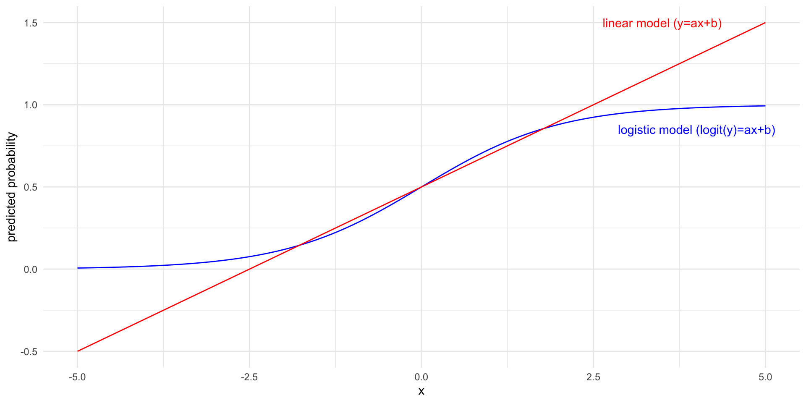

🦃 Lecture 23 🍗
Today we’re going to study data from the latest season of NCAA basketball:
\[ x - 2h, \]
since A loses its \(+h\) boost and B gains one.
\[ \begin{align} \Pr(\text{A beats B on neutral court} \mid x) \\ \approx \Pr(\text{A beats B on B’s court} \mid x + h). \end{align} \]
The linear model says:
\[y = f(a_0 + a_1 x)\]
for \(f(x)=x\).
For 0/1 outcomes, this won’t work. (Why not?)
Instead, let’s think about modeling the probability that \(y=1\):
\[\text{Prob}(y=1) = \underbrace{f(a_0 + a_1 x)}_{(\text{some function of the covariates})}\]
What criteria should this function \(f\) have?
A function which satisfies both the properties is the logistic function (a.k.a Sigmoid): \[f(x) = \frac{1}{1 + e^{-x}} =\frac{e^x}{1 + e^{x}} .\]
\[f(a_0+a_1x) = \frac{e^{a_0+a_1x}}{1 + e^{a_0+a_1x}} .\]
The odds of an event with probability \(p\) is defined as
\[\text{odds} = \frac{p}{1-p}.\]
The logit function is the function that maps a probability \(p\) to its log-odds:
\[\text{logit}(p) = \log\left(\frac{p}{1-p}\right).\]
The sigmoid function is the inverse of the logit function: sigmoid(logit(p)) = p.

glm() function, which stands for “generalized linear model”.glm(y ~ x, data=., family="binomial")family="binomial"! Otherwise you’re getting linear regression!
Call:
glm(formula = Survived ~ Age + Sex + Class, family = "binomial",
data = tdf, weights = Freq)
Coefficients:
Estimate Std. Error z value Pr(>|z|)
(Intercept) 0.6853 0.2730 2.510 0.0121 *
AgeAdult -1.0615 0.2440 -4.350 1.36e-05 ***
SexFemale 2.4201 0.1404 17.236 < 2e-16 ***
Class2nd -1.0181 0.1960 -5.194 2.05e-07 ***
Class3rd -1.7778 0.1716 -10.362 < 2e-16 ***
ClassCrew -0.8577 0.1573 -5.451 5.00e-08 ***
---
Signif. codes: 0 '***' 0.001 '**' 0.01 '*' 0.05 '.' 0.1 ' ' 1
(Dispersion parameter for binomial family taken to be 1)
Null deviance: 2769.5 on 23 degrees of freedom
Residual deviance: 2210.1 on 18 degrees of freedom
AIC: 2222.1
Number of Fisher Scoring iterations: 5To estimate the home court advantage model, we need a d.f. that resembles:
# A tibble: 8,958 × 2
beat_on_road home_margin
<lgl> <dbl>
1 FALSE 22
2 FALSE 7
3 FALSE -6
4 TRUE 30
5 FALSE -9
6 TRUE -3
7 TRUE 18
8 FALSE 2
9 FALSE 12
10 TRUE 10
# … with 8,948 more rowsI had to think for a few minutes about how to create this data frame. We’ll to it in stages:
Let’s see how well our logistic regression model fits to data:
Our logistic regression model is
\[\log \left( \frac{p}{1-p} \right) = a_0 + a_1 x.\]
If \(p=1/2\) then the LHS is zero, and we get simply \(h = -a_0/a_1\).